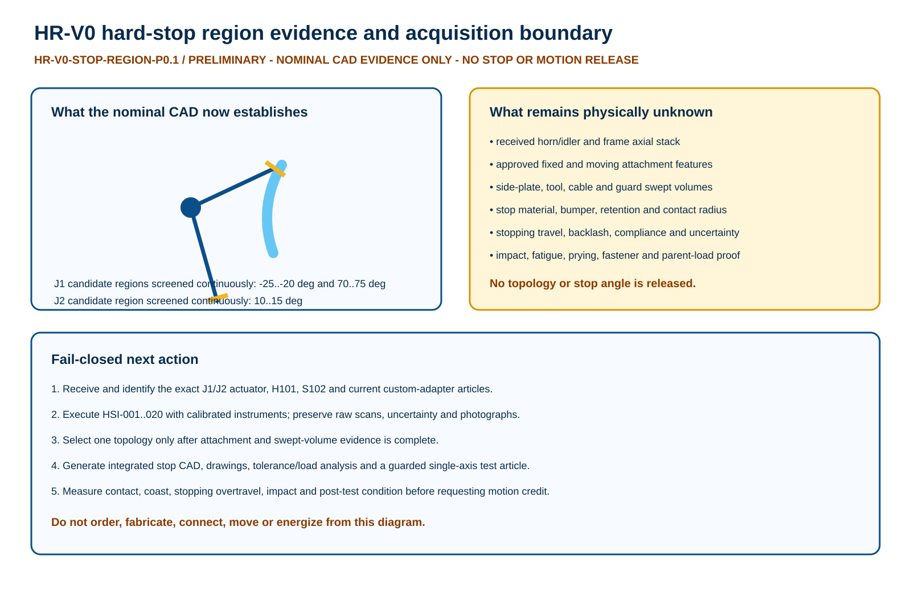

Result
The three historic boundary regions are free of nominal P0.7 rigid-body contact in the new sampled and continuous checks.
That is geometric feasibility, not a released stop datum.
Evidence scale
6,411 sampled boundary poses
131 continuous pair-region certificates
20 physical inputs still open
Why no stop part yet
The current source does not establish the as-built axial stack, approved attachment features, cable/guard sweeps, or load/bumper basis. Drawing a cam before those measurements would invent interfaces.
Readable boundary map

Explore the remaining inputs
| ID | Category | Required input | Evidence method | Boundary |
|---|---|---|---|---|
| HSI-001 | CONFIG | received XM540 identity and serial for J1/J2 | supplier label plus receiving photographs | exact received article must match controlled source |
| HSI-002 | CONFIG | received H101 and S102 identities for J1/J2 | labels, kit trace and receiving photographs | no visual substitution |
| HSI-003 | AXIAL | J1 assembled H101/C01 outer X faces relative to joint axis | CMM or calibrated height/depth method | SELECTION REQUIRED |
| HSI-004 | AXIAL | J1 assembled S102/C05 outer X faces relative to joint axis | CMM or calibrated height/depth method | SELECTION REQUIRED |
| HSI-005 | AXIAL | J2 assembled H101/C06 outer X faces relative to joint axis | CMM or calibrated height/depth method | SELECTION REQUIRED |
| HSI-006 | AXIAL | J2 assembled S102/C07 outer X faces relative to joint axis | CMM or calibrated height/depth method | SELECTION REQUIRED |
| HSI-007 | ENVELOPE | available side-plate volume on both X sides of J1 | 3D scan or CMM point cloud across -25..75 deg | include screws, tools, connectors and service access |
| HSI-008 | ENVELOPE | available side-plate volume on both X sides of J2 | 3D scan or CMM point cloud across 10..118 deg | include screws, tools, connectors and service access |
| HSI-009 | ATTACHMENT | approved fixed-structure attachment features near J1 | manufacturer drawing plus received feature metrology | do not infer unused holes or threads |
| HSI-010 | ATTACHMENT | approved moving-link attachment features near J1 | manufacturer drawing plus received stack metrology | longer/shared fasteners require separate release |
| HSI-011 | ATTACHMENT | approved fixed-structure attachment features near J2 | manufacturer drawing plus received feature metrology | do not infer unused holes or threads |
| HSI-012 | ATTACHMENT | approved moving-link attachment features near J2 | manufacturer drawing plus received stack metrology | longer/shared fasteners require separate release |
| HSI-013 | MOTION | encoder zero, repeatability and unpowered backlash at J1 | calibrated angle reference, repeated bidirectional series | SELECTION REQUIRED acceptance and uncertainty |
| HSI-014 | MOTION | encoder zero, repeatability and unpowered backlash at J2 | calibrated angle reference, repeated bidirectional series | SELECTION REQUIRED acceptance and uncertainty |
| HSI-015 | CABLE_GUARD | received cable, connector and strain-relief swept volume | configured harness plus scan/inspection at boundary poses | cables may not become stops |
| HSI-016 | CABLE_GUARD | received guard and access-clearance swept volume | configured guard inspection at boundary poses | nominal CAD does not establish safety distance |
| HSI-017 | LOAD | accepted stop contact radius and load path | qualified structural model tied to received geometry | include prying, unequal sharing, parent structure and fasteners |
| HSI-018 | LOAD | effective and reflected inertia for every released case | instrumented dynamic characterization | include payload, current, speed, voltage, temperature and fault cases |
| HSI-019 | BUMPER | exact bumper and retention selection | current manufacturer force-stroke, energy, temperature, aging and life evidence | SELECTION REQUIRED; metal backup remains mandatory |
| HSI-020 | MANUFACTURING | supplier DFM and inspection capability for selected stop topology | written DFM, material certification and FAI plan | no quotation or fabrication release in this package |